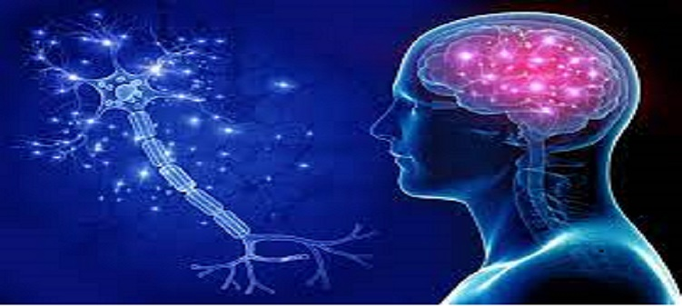

| LIFE MATTERS Hospital |
| HOME | REGISTRATION | PROCEDURES | LOCATION |
|---|
|
The term cardiology is derived from the Greek words ‘cardia’ which refers to the heart and ‘logy’ meaning the study of. Cardiology is the study and treatment of disorders of the heart and the blood vessels. The field includes medical diagnosis and treatment of congenital heart defects, coronary artery disease, heart failure, valvular heart disease and electrophysiology. A person with heart disease or cardiovascular disease is usually referred to a cardiologist. The cardiology team is highly experienced in diagnosing and treating diseases of the cardiovascular system. The cardiologist advises some tests, and may perform some procedures, such as heart catheterizations, angioplasty, or inserting a pacemaker in order to achieve accurate diagnosis of the problem. There are three main types of cardiology procedures: Invasive, Non-invasive, and Interventional. |
|
The Pulmonology Department renders bronchoscopy services, both flexible and rigid. The department is well known for its competent work in interventional bronchoscopy, especially Trans-Bronchial Needle Aspiration (TBNA)/ biopsies, endobronchial electrosurgery procedures, balloon bronchoplasty and stenting. Pleuroscopy and video assisted thoracoscopic procedures add to another field of the proficiency of the department. The Pulmonology Department is also equipped with the Endobronchial Ultrasound (EBUS) facility. The department utilizes all the latest and modern tools for broncoscopic diagnosis. The department also consists of a specialized sleep laboratory and conducts multiple sleep studies in the laboratory for patients with diseases and conditions related to obesity hypoventilation syndrome, obstructive sleep apnoea, day time sleepiness and snoring disorders and multiple others. |
|
The Department of Obstetrics and Gynaecology offers a broad spectrum of women health care services involving unborn children and pregnant women along with efficient management of related diseases. The department also renders state-of-the-art technologies with superlative care providing a full range of healthcare services such as painless deliveries, minimally invasive surgeries, treatment of gynecological cancers by performing radical surgeries, chemotherapy and/or radiotherapy, management of high-risk pregnancies/late pregnancies, fertility care, among others. Fortis provides expert gynecological and obstetric treatment along with specialist services for special disease groups. Women of different age groups have different health concerns, which are appropriately assessed and addressed with the utmost care. |
|  |
The Department of Neurology at Fortis deals with managing and treating disorders related to the nervous system of the body. The department is focused on providing comprehensive care to the patients by remaining at the forefront of the technology in the ever evolving neurology space.The Department is committed to integrate its exceptional medical expertise, technology, and innovation to offer the best in class treatments. The department provides diagnosis and treatment for people with neurological disorders such as Parkinson’s, stroke, epilepsy, paralytic disorders, sleep disorders, multidisciplinary assessment and management of multiple sclerosis and headaches. The department has a leading panel of surgeons, doctors, and nursing staff who are vastly experienced and are well trained in using the latest neuroimaging techniques to provide an accurate diagnosis and an efficient treatment. |
|
The Department of Urology at Fortis delivers advanced and specialized urological care at par with international standards. The department provides a full spectrum of diagnostics and treatment for urology cancers, urinary tract infectious diseases, renal disease, reconstructive urology surgery, laparoscopic urology, erectile dysfunction, stone disease, pediatric urology, prostate diseases, pediatric renal transplant and andrology. The urologists are experts in treating patients with the latest and updated laparoscopic and laser technologies. The department delivers multi-disciplinary and compassionate care to the patients suffering from any kind of urologic disorders, including cancers, incontinence, impotence, laparoscopic urology, bladder issues and deformities. The team of urologists is highly specialized in treating patients of all ages and gender with utmost and personalized care. |
|
The department of Gastroenterology and Hepatology Sciences provides comprehensive high-end care for a wide spectrum of gastrointestinal, pancreatic, liver and biliary disorders with the help of a highly qualified, experienced team of Gastroenterologists supported by the state-of-art technology. Our services include Endoscopies (Gastroscopy, Duodenoscopy, Enteroscopy), Colonoscopy, Endoscopic Ultrasound (biopsies and FNAC), Capsule Endoscopy, ERCP, Management of acute/life threatening conditions such as Acute liver failure, GI bleed, Acute pancreatitis, Acute colitis, Biliary sepsis, and Therapeutic procedures such as Polypectomies, Variceal banding, Foreign body removal, GI stenting and Treatment of GI bleed. |
|
The department of pediatric care comprises of a highly experienced team of pediatricians that offer the best out-patient, in-patient and intensive care services. The department offers expert intensivists and trained nurses in respective sub-specialties to ensure compassionate care and speedy recovery of the patient. Complete care, safety and comfort of the patient are well taken care of. The Doctors provide expert counseling and consultations to the patients/child's family members and are also skilled in treating a wide variety of pediatric diseases and illnesses related to lungs, skin, blood and kidney. The team focuses on complete care and focuses on the special needs of the newborns. |